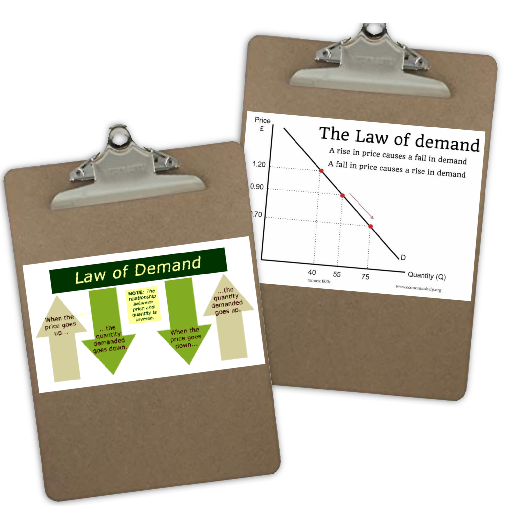
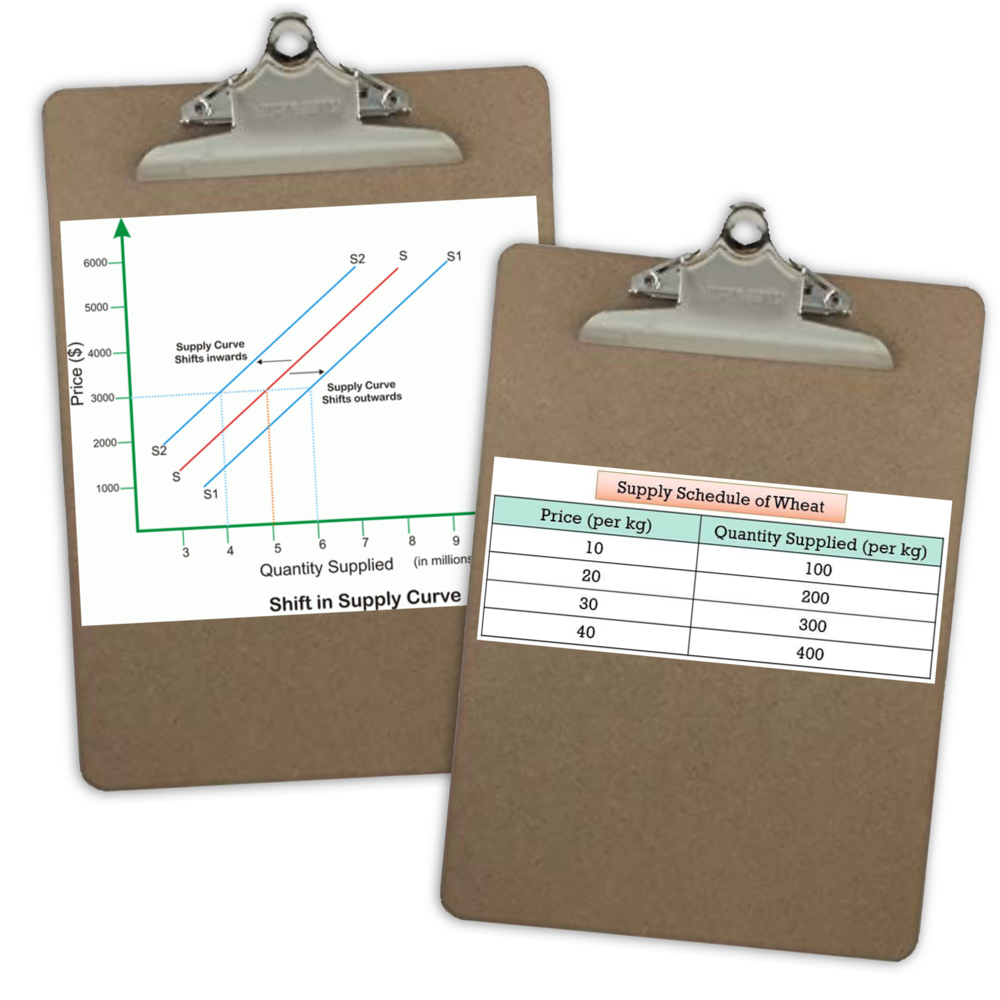
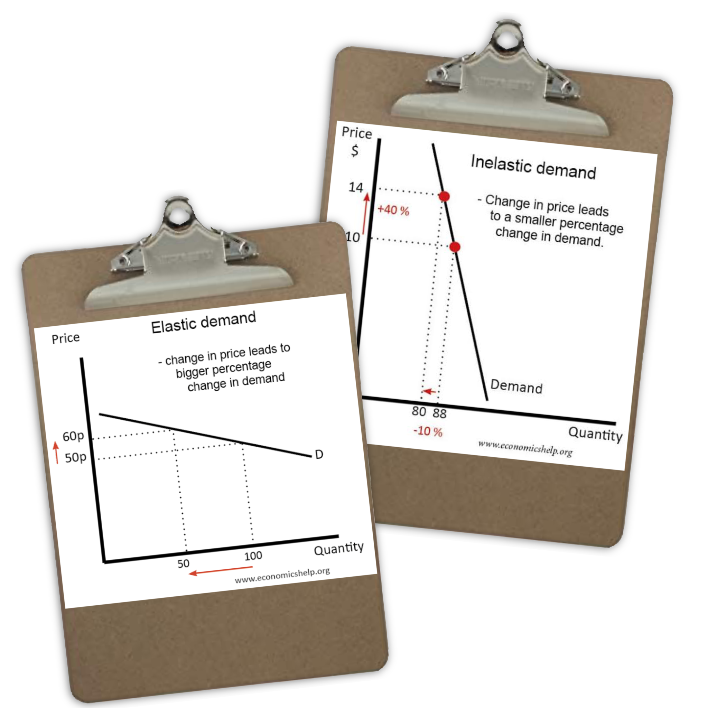
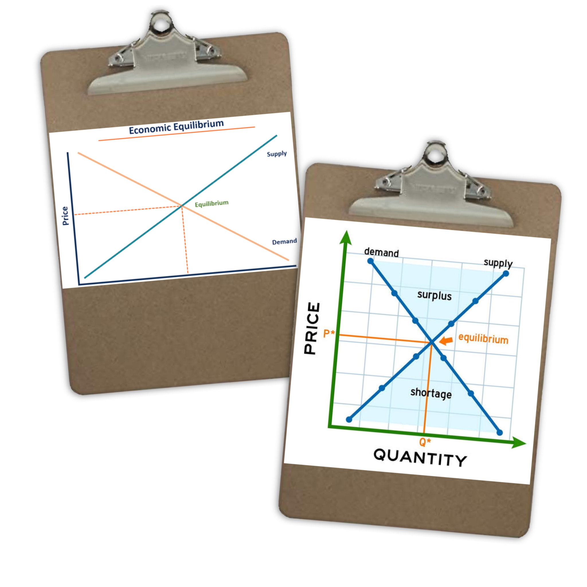
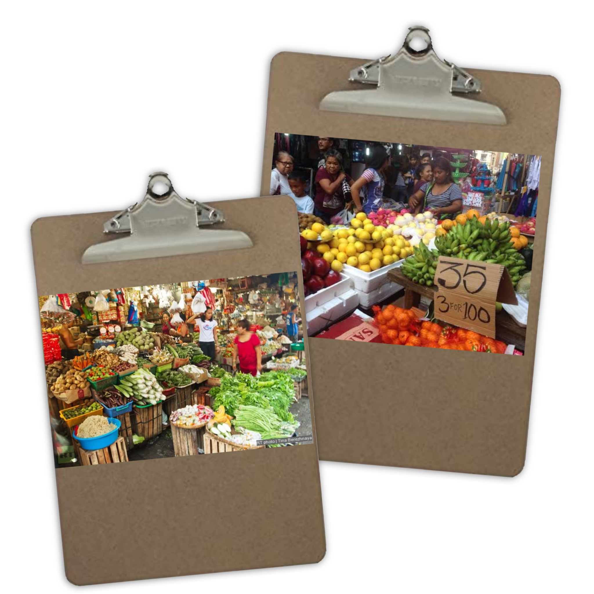

- Ang presyo pinakamahalagang nagtatakda (determinant) sa dami ng demand.
- Kapag tumataas ang presyo, bumababa ang dami ng gusto at kayang bilhin, at kapag bumababa ang presyo, tataas naman ang dami ng gusto at kayang bilhin. (Ceteris Paribus)
- Ito ay nangangahulugang ipinagpapalagay na ang presyo lamang ang salik na nakaaapekto sa pagbabago ng quantity demanded, habang ang ibang salik ay hindi nagbabago o nakakaapekto rito.
- Kapag tumataas ang presyo ng isang produkto, ang mga mamimili ay hahanap ng pamalit na mas mura.
- Nagpapahayag na mas malaki ang halaga ng kinikita kapag mas mababa ang presyo.
demand = kagustuhan + kakayahan
- Matematikong pagpapakita o paglalahad sa ugnayan ng presyo at quantity demanded sa pamamagitan ng formula (Qd)
- Qd = a - bP
- Nakabase ang QD sa Presyo.
Qd = 60 - 10P
10P = 60 - Qd
10P = 50
P = 5 (presyo)
- Tsart na nagpapakita ng bilang ng mga kalakal o serbisyo na hinihiling sa mga tiyak na presyo.
- Isang talahanayan na nagpapakita ng ugnayan sa pagitan ng presyo ng mga kalakal na nais bayaran ng mga mamimili sa kanila sa presyo na iyon.
- Grapikong representasyon ng Batas ng Demand.
- Isang linya (tuwid o kurba) na nagpapakita ng negatibong relasyon ng presyo ng isang produkto at ang bilang ng produktong handang bilhin ng mamimili.

Bumababa ang demand kapag tumataas ang presyo, base sa Batas ng Demand!
- Dami ng produkto o serbisyo na gustong ibenta ng mga prodyuser sa isang takdang presyo at partikular na panahon.
- Ang presyo pinakamahalagang nagtatakda (determinant) sa dami ng supply.
- Kapag tumataas ang presyo, tataas ang dami ng gustong ibenta; at kapag bumababa ang presyo, bababa naman ang dami ng gustong ibenta. (ceteris paribus)
supply = pagnanais + kakayahan
- Talahanayang nagpapakita kung gaano karaming produkto o serbisyo ang nais gawin ng mga prodyuser
- Grapikong representasyon kung gaano karaming produkto o serbisyo ang nais gawin ng mga prodyuser.
- Isang mathematical equation na nagpapakita sa relasiyon ng dami.

| Price | Quantity Supplied |
|---|---|
| ₱10 | 50 |
| ₱20 | 80 |
- Pamamaraan upang masukat ang porsiyento ng pagtugon ng mamimili sa bawat porsiyento ng pagbabago ng presyo.
- Pagsukat ng porsiyento ng pagtugon ng mamimili sa bawat porsiyento ng pagbabago ng presyo.
- Pagsukat ng porsiyento ng pagtugon ng nagtitinda sa bawat porsiyento ng pagbabago ng presyo.
- Kapag malaki ang naging bahagdan ng pagtugon ng quantity demanded o quantity supplied kaysa sa bahagdan ng pagbabago ng presyo.
- |E| > 1
- Produktong madaling hanapan ng kapalit (softdrinks, damit, etc.)
- Kapag maliit ang naging bahagdan ng pagtugon ng quantity demanded o quantity supplied kaysa sa bahagdan ng pagbabago ng presyo.
- |E| < 1
- Mga pangunahing pangangailangan at mga produktong halos walang pamalit (gamot).
- Pareho ang bahagdan ng pagbabago ng presyo sa bahagdan ng quantity demanded.
- |E| = 1
- Anumang pagbabago sa presyo ay magdudulot ng infinite na pagbabago sa quantity demanded/quantity supplied.
- |E| = ∞
- Produktong handang bilhin/ibenta ng marami sa isang takdang presyo (chocolate).
- Nangangahulugan na ang quantity demanded/quantity supplied ay hindi tumutugon sa pagbabago ng presyo.
- |E| = 0
- Mga produktong lubhang napakahalaga na kahit anong presyo ay bibilhin pa rin ang parehong dami (bigas)
Ep = %ΔQ / %ΔP

- Isang kalagayan na walang sinuman sa mamimili at nagbibili ang gustong baguhin ang kasalukuyang sitwasyon sa pamilihan.
- Ipinapakita nito ang pagkakasundo ng bumibili at nagbibili sa isang takdang presyo at dami ng produkto.
Kapag tumaas ang presyo: Supply ↑, Demand ↓ Kapag bumaba ang presyo: Supply ↓, Demand ↑
- Ang kurba ng demand ay pabulsok kapag mababa ang halaga ng produkto maraming konsyumer ang makabibili kaya’t maraming produkto at serbisyo ang mabibili.
- Subalit kapag ang presyo ay mataas, mababa ang kakayahang makabili o hindi na makabili ang maraming konsyumer.
- Kapag mababa ang presyo, malaki ang demand; subalit kapag mataas ang presyo, ay nanaisin na lamang ang bumili ng alternatibong pamalit na bilihin.
- Kapag mataas ang presyo ng isang bilihin, tataas ang dami ng produktong handang ipagbili sa isang takdang panahon.
- Kapag mababa ang presyo ng isang bilihin, bababa rin ang produktong nais ipagbili sa isang takdang panahon.
- Ang dami ng demand ay maaaring kulang o sobra sa dami ng supply. Dami ng Demand ≠ Dami ng Supply
- Ang dami ng demand ay mas marami kung ihahambing sa dami ng supply.
- Dami ng Demand > Dami ng Supply

After Demand Increases: Kapag tumaas ang demand, lilipat sa kanan ang demand curve, tataas ang equilibrium price at dami.
After Supply Decreases: Kapag bumaba ang supply, lilipat sa kaliwa ang supply curve, tataas ang presyo at bababa ang dami.
- Isang uri ng pamilihan kung saan maraming mamimili at nagbebenta ng magkakatulad na produkto, kaya’t walang sinuman ang may kakayahang kontrolin ang presyo.
- Halimbawa: Pamilihan ng bigas, gulay, o prutas sa palengke.
- Ang di-ganap na kompetisyon ay isang estruktura ng pamilihan na hindi perpekto ang kompetisyon. May mga hadlang sa pagpasok ng bagong negosyante, may kontrol sa presyo, at may pagkakaiba-iba ng mga produkto. Saklaw nito ang monopolyo, monopolistikong kompetisyon, oligopolyo, at monopsony.
- Halimbawa: Ang mga kompanya ng langis, fast food chains, o malalaking negosyong may kontrol sa presyo ng kanilang produkto.
- Estruktura ng pamilihan kung saan iisa lamang ang nagbebenta o prodyuser ng produkto o serbisyo. Dahil dito, siya ay may ganap na kontrol sa presyo at suplay.
- Halimbawa: Meralco (kuryente), Maynilad o Manila Water (tubig).
- Uri ng pamilihan na may maraming nagbebenta ng magkakatulad ngunit may bahagyang pagkakaibang produkto. May kalayaan sa pagpasok at paglabas ng negosyo, at ginagamit ang branding at marketing para makipagkumpitensya.
- Halimbawa: Mga fast food chains (Jollibee, McDonald’s, KFC).
- Estruktura ng pamilihan kung saan iilang malalaking kompanya ang kumokontrol sa presyo at suplay ng produkto o serbisyo. Ang desisyon ng isa ay nakaaapekto sa iba.
- Halimbawa: Mga kumpanya ng langis (Petron, Shell, Caltex) o mga telco (Globe, Smart, DITO).
- Ang monopsony ay isang uri ng pamilihan kung saan iisa lamang ang mamimili ngunit maraming nagbebenta ng produkto o serbisyo. Dahil dito, ang mamimili ang may kapangyarihang kontrolin ang presyo ng bilihin o serbisyo.
- Halimbawa: Ang pamahalaan bilang nag-iisang bumibili ng mga kagamitang pangmilitar, o isang malaking kompanya na tanging bumibili ng ani mula sa mga magsasaka.

- Ang pagtatadhana ng pamahalaan ng pinakamababa at pinakamataas na presyong maaaring itakda sa mga produkto at serbisyo.
- Kilala sa tawag na Price Control Act.
- Layunin na maisagawa ng pamahalaan ang pagkontrol sa presyo ng mga bilihin.
- Ito ay may layuning na mabantayan ang presyo ng mga produkto pagkatapos magpalabas ng price ceiling ang pamahalaan.
- Ito ay ang pinakamataas na presyong itinakda ng pamahalaan upang ipagbili ang mga produkto.
- Ito ay isinasagawa upang tulungan ang mga mamimili laban sa mga abusado at mapagsamantalang mga negosyante.
- Itinatakda ito na mas mababa sa equilibrium price na umiiral sa pamilihan.
- Ito ay isinasagawa ng pamahalaan upang tulungan at bigyang proteksyon ang mga prodyuser upang mabayaran ang mga gastos ng produksyon.
- Ito ay ang pinakamababang presyong itinakda ng pamahalaan upang ipagbili ang mga produkto.
Ang diagram sa ibaba ay nagpapakita kung paano nakikialam ang pamahalaan sa pamilihan upang mapanatili ang balanse.
💡 Ang pamahalaan ay nagbibigay ng regulasyon, buwis, at tulong upang mapanatili ang patas na kalakalan.